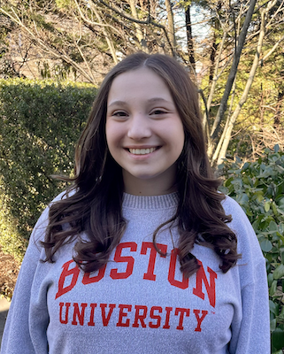

Home

Hello and welcome to my website
I am Madeline Skopicki, a full-time undergraduate student at Boston University majoring in Computer Science with a minor in Education and Human Development. I plan to continue my academic journey with the goal of pursuing a Master’s Degree in Computer Science. My ultimate aspiration is to integrate technology and education in ways that make learning more accessible, engaging and effective. Here, you’ll find my experiences and reflections that highlight both my academic and personal growth.